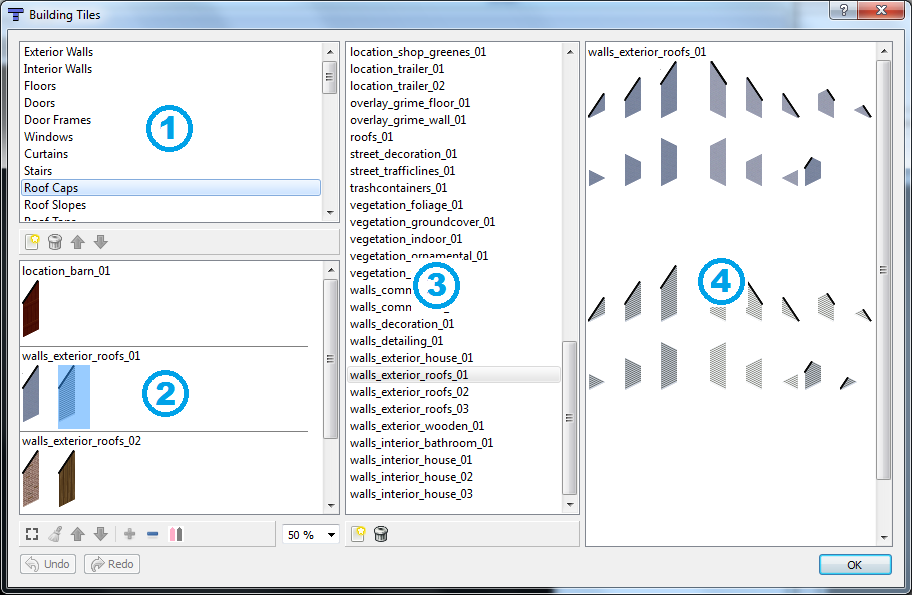
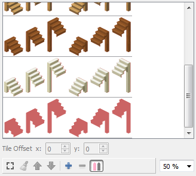
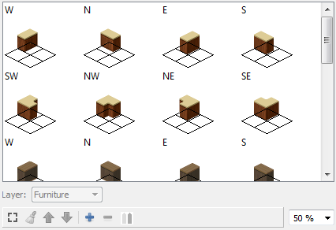
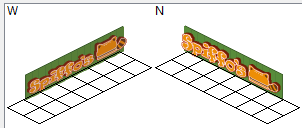

BuildingEd Tiles Dialog

This list shows 2 things:
- The non-furniture categories from "Exterior Walls" to "Roof
Tops". The buttons below this list are all disabled when one of these
categories is selected.
- The furniture categories all created by the user. These are
always listed after the non-furniture categories. Furniture categories
may be added, removed and reordered using the buttons below this list. Double-click on a category to change its name.
Selecting an item in this list will cause the entries in the selected category to be displayed in  .
.
This list shows the entries for the category that is selected in . Double-clicking on an entry in this list will display that tile in .
Non-furniture category entries
The non-furniture categories from "Exterior Walls" to "Roof Tops" are used to choose tiles for the exported TMX file.
- One entry from the "Exterior Walls" category is assigned to a
building. The entry is used to choose the exterior wall tiles of
the entire building.
- One entry from the "Interior Walls" category is assigned to each room in a building. Each room may have a different entry.
- One entry from the "Floors" category is assigned to each room in a building. Each room may have a different entry.
- Every door object has one entry from "Doors" and one entry from
"Door Frames" assigned. Different entries may be assigned to each
individual door object, and either entry may be set to "none".
- Every
window object has one entry from "Windows" and one entry from
"Curtains" assigned. Different entries may be assigned to each
individual window object, and either entry may be set to "none".
- Every
stairs object has one entry from "Stairs" assigned. Different
entries may be assigned to each individual stairs object.
- One entry from "Roof Caps" and one entry from "Roof Slopes" is
assigned to the current building. Every roof object and
roof-corner object uses the same tiles.
- Every
roof object has one entry from "Roof Tops" assigned, which may be set
to "none". Different entries may be assigned to each individual roof
object.
There are 2 ways to view the entries in the non-furniture
categories. You can switch to and from Expert Mode by clicking
the button below the list.
Normal Mode
When not in Expert Mode, each entry is represented by a single tile
image. The entries are grouped by tileset name. In this
mode you can add a new entry by dragging a tile from . This requires the tiles to be in a very specific order in the tileset (which they usually are but not always).
Expert Mode
In Expert Mode, all of the predefined slots that make up an individual
entry are shown. Consider this picture of the "Stairs" category
in Expert Mode:

Here you can see all of the 6 tiles that are needed by each entry in
the "Stairs" category. The pink outline gives you an idea about
the tiles that should be assigned to an entry. You can assign a tile to
each spot by drag-and-dropping one from . Use Expert Mode when tiles are not in the expected order in the tileset image. Clicking the will add a new entry below the current one. Clicking the  will remove all the selected entries.
will remove all the selected entries.
Tile Offsets
Sometimes the tiles in an entry must be placed at an offset in the
TMX. This happens with some sloped roof tiles. So instead
of placing the image at the correct x,y position it must be placed at
an offset to appear in the correct position visually. You can
adjust this offset for each tile in an entry in Expert Mode using the x
and y spinboxes below the list.
Furniture category entries
Furniture category entries are used by furniture objects. Each
entry has either 4 or 8 different "furniture tiles", one for each
different orientation. Most furniture tiles only use West, North,
East and South orientations, but others furniture tiles like kitchen
counters also have South-West, North-West, North-East and South-East
orientations for corners.

Furniture layers
Some furniture goes on the ground (like tables) while other furniture
goes on the walls (like light switches). Furniture category
entries can be assigned to different layers using the "Layer:" combobox
below the list. The "Furniture" layer is the default.
- The "Walls" layer is used for things like garage doors and wide shop windows. When furniture is assigned to the "Walls" layer, its tiles replace a room's wall tiles. Use this if you want to leave a hole for an extra-wide window or door, or replace a section of wall with another tile.
-
The "WallOverlay" layer is used for things like the
Fossoil painted logos, stuff that goes on a wall but behind any furniture.
- The "Frames" layer is used for multi-tile windows. Note
that to leave a hole in a wall for a multi-tile window you must first
place another furniture object whose tile is assigned to the "Walls" layer. See the "Fixtures - Windows" furniture category for an examples.
- The "Doors" layer is used for multi-tile doors. Note that
to leave a hole in a wall for a multi-tile door you must first place
another furniture object whose tile is assigned to the "Walls"
layer. See the "Location - Community - Church - Small" furniture
category for an example.
- The "RoofCap" layer is used for wall-like tiles at the ends of roofs. See the "Location - Trailer" furniture category for an example.
- The "Roof" layer is for tiles you consider part of a roof. See the "Location - Trailer" furniture category for an example.
Assigning tiles to furniture
Each furniture tile can be made up of 1 or more tile images. Tiles are assigned by drag-and-dropping one from . Here is an example of 2 extra-large furniture tiles:

The tile grid grows larger as new tiles are dropped. You can
clear all the tiles from selected furniture tiles by clicking the  button below the list.
button below the list.
This
list shows the names of all the tilesets that have been added.
These tilesets are added to exported TMX files. Tilesets may be
added or removed using the 2 buttons below this list.
This list shows all the tiles in the tileset that is selected in .